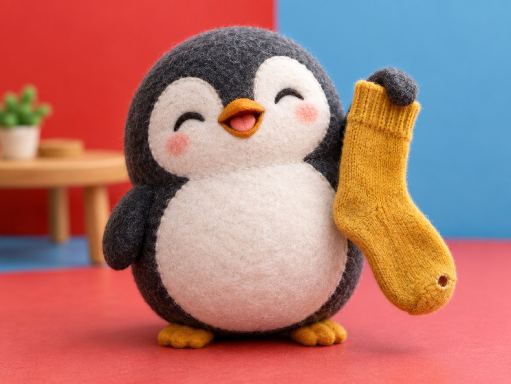

🧪 LAB · 試作 — AIが読書メモから一気に作った記事です。本番の一覧には出していません · 試作の一覧
🐧 EVERYDAY LIFE⚡ 22 SEC
Tell your embarrassing moment as a joke, and it gets lighter 🧦

Hiding Grows
The more you hide an embarrassing thing, the more you worry about it.
The Sock
For example, you take off your shoes at a restaurant, and your sock has a hole.
⚡ TRY IT
Oh no, a hole in your sock!
Oh no… there is a hole in my sock!
(Hide it… hide it… did they see it?)
😵 Too much worry! I cannot even taste the hot pot.
😂 "Of all days, my sock has a hole today!"
🍲 "Mm, this is so good!" (They did not even notice.)
🤣 "Ha ha ha! Mine had one last week!"
😰 Worry
Hide it, or say it? Try both.
🏅 The hole became the funniest story of the night.
🙈 Hiding made the worry bigger. Next, try saying it as a joke!
Say It First
Then just say it first, with a laugh: "Of all days, my sock has a hole today!"
Laugh Together
When everyone laughs, it is not embarrassing anymore.
Shy Is Fine
They say looking a little shy even makes people like you.
📚 I learned this from the Japanese blog "Panda no Ondo".